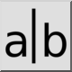
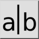

Menu: Blok > Preimenuj blok
Shortcut: B, N
Commands: blockrename | bn
Toolbar / Icon:
 

Menu: Blok > Preimenuj blok
Shortcut: B, N
Commands: blockrename | bn
Opis:
Preimenuje aktivni blok. Pri tem bo prikazan isti dialog kot pri ustvarjanju bloka. Blok in blokovne reference bodo nato preimenovane.